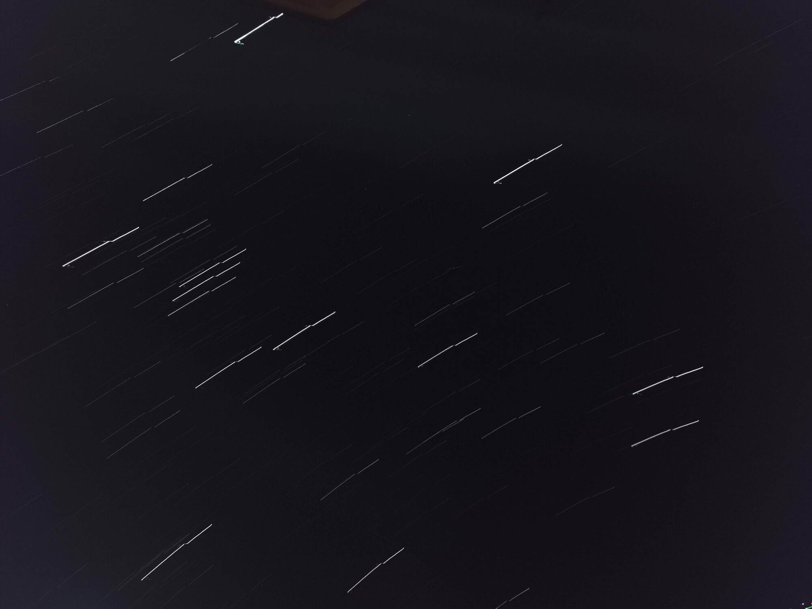
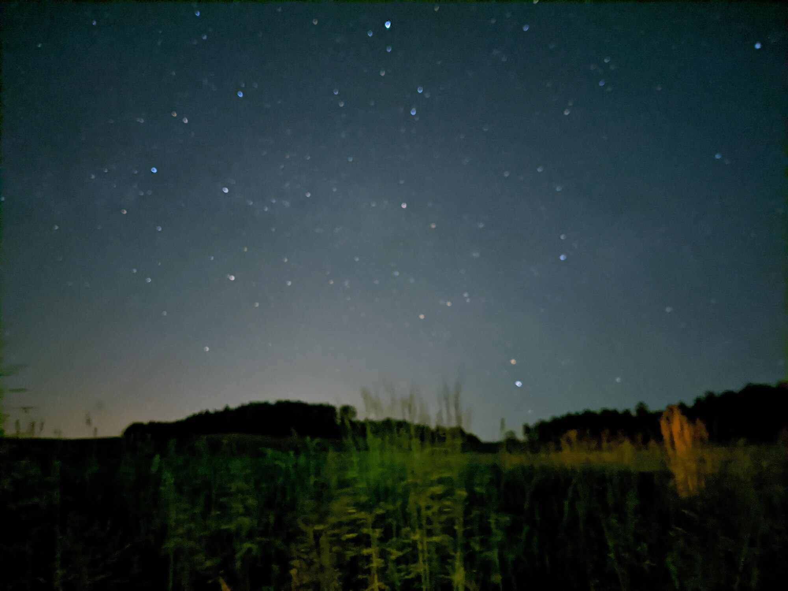
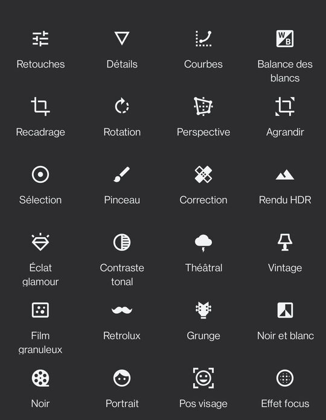

Sur cette page, vous trouverez des conseils et des aides que j’ai découvert durant mes trois ans d’astrophotographie ainsi qu’avant lorsque j’étais déjà passionné.


Quelques conseils
Les trucs à ne pas oublier
Le trépied
En tout premier, il faut vérifier que rien ne puisse faire bouger votre trépied / support. Je ne pourrai dire combien de fois ça m’ai arrivé de rentrer après une longue session avant de me rendre compte que le trépied avait bougé soit à cause du sol ou d’un chat. Quand cela arrive, surtout pendant la prise d’une startrail, il y aura un moment où les étoiles sont décalé par rapport au reste.

Une startrail décalée
Le focus
Pour faire de l’astrophotographie, il ne faut jamais le focus de sa caméra/téléphone sur automatique. Pourquoi ? parce qu’avec le peu de lumière que la nuit a à nous partager, l’autofocus est inutilisable. Il faut donc penser à le mettre sur « infini » ou le plus loin possible.

Une photo prise avec l'autofocus
L’exposition
Il est important de bien gérer l’exposition car si elle est trop longue, l’image donnera l’impression d’avoir été prise en plein jour ou alors les corps célestes tel que la lune et les planètes n’auront plus aucun détails. Et au contraire, si l’image n’est pas assez exposée, le ciel sera noir et aucune constellation ni aucune nébuleuse ne sera visible.
Dans l’Idéal, l’exposition devrait respecter la « règle 500 ». Cette dernière dit qu’il faut diviser 500 par la distance focale de la lentille (par exemple, si une photo est prise avec un objectif de 25mm, le temps maximum d’exposition sera de 500/25 = 20 secondes)
Pour les retouches
Une fois la ou les photo(s) capturée(s), vous pourrez vous arrêtez ici et les partager. Mais la retouche peut faire ressortir des détails et augmenter la qualité de la photo. Si vous le pouvez, capturer vos photos en RAW et non en jpg, ce format permet d’avoir une plus grosse marge de manœuvre lors des modifications.
Les logiciels
Étant donné que je n’ai jamais essayé de retoucher avec des programme PC, je vais me contenter de vous décrire les applications mobiles.
-
La galerie de votre téléphone
En effet, cette dernière propose quelques réglages simples qui permette de faire des retouches rapides tel que le contraste et la saturation. Cependant, le stacking n'y est pas disponible.
-
Google Snapseed (disponible ici)
Snapseed possède beaucoup d’options (optionsSnapseed.jpg) mais pour l’astrophotographie, ce qui nous intéresse, c’est retouches, sélection ; détails, double exposition et. Dans l’ordre, ces options servent à : gérer l’expositions, contraste et saturation sur toute l’image ou une plage de couleur, à modifier la netteté et la structure, et à faire du stacking.
-
Startrail (disponible ici)
Ce logiciel n’a qu’un seul but, empiler des photos. Il effectue du stacking comme la double sélection de snapseed mais peut le faire avec autant d’éléments que le vous voulez.

Les options proposées par Snapseed
Les paramètres à modifier
Les retouches de base
Dans l’astrophotographie, les retouches les plus simples et plus communes sont la luminosité, le contraste te la saturation. Le but de ces paramètres est de rendre les ombres très noires les étoiles blanches et lumineuse et les nébuleuses colorées.
Le Stacking
Le stacking consiste à empiler des photos soit pour faire ressortir des détails si elles ont été prises avec du tracking ou alors de faire des startrail.
La Suppression du bruit
Le bruit (ou grain) est l’une des choses que l’on ne veut pas avoir sur ses photos- ce dernier se caractérise par du grain qui se retrouve partout sur l’image (voir le début du gif stacking). Le bruit peut être assez facilement enlevé à l’aide d’un slider. Cependant, ce n’est pas une bonne idée de le mettre au maximum car sinon le lissage supprimera tous les détails. Il est préférable de plutôt photographier avec une valeur ISO plus basse et d’augmenter la luminosité par après que de réduire le bruit.

Fonctionnement du stacking

Exemple de startrail